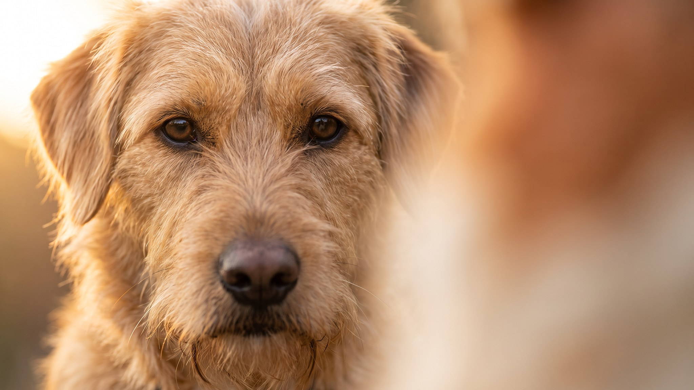

На прогулке эстонская гончая поднимает нос, делает несколько быстрых шагов в сторону и уходит по следу. Не убегает из страха, не гонится от скуки: просто включился инстинкт, которому несколько сотен лет. Это единственная порода собак, официально выведенная в Эстонии, и за её уравновешенным домашним характером стоит очень конкретный рабочий инструмент. Что это означает для городского владельца, разбираем ниже.
🐾 У вас эстонская гончая?
AnimaLife соберёт уход под породу: к каким болезням есть склонность, что проверять по возрасту, чем кормить и когда пора к врачу. Бесплатно, прямо в мессенджере.
Собрать план ухода → Собрать в MAX →
У вас iPhone? AnimaLife есть в App Store
Эстонская гончая выведена в первой половине XX века целенаправленно: эстонские охотники хотели компактную гончую для работы в густых лесах с невысоким подлеском. В 1954 году порода получила официальное признание. По советским стандартам рост собаки не мог превышать 45 см, иначе дичь уходила раньше, чем охотник успевал подойти.
Сегодня эстонскую гончую держат и как охотничью рабочую собаку, и как компаньона. Второй вариант требует понимания того, с чем вы имеете дело.
Дома эстонская гончая уравновешена, мягка и хорошо ладит с людьми. Привязывается к семье, терпима к детям, не агрессивна с другими собаками при социализации. Это добрая, некапризная собака.
На улице картина меняется. Нюх у эстонской гончей очень сильный. Когда она чует свежий след, охотничий инстинкт перекрывает команды. Собака не игнорирует хозяина намеренно: в этот момент она просто находится в другом режиме.
Голос эстонской гончей звонкий, далеко слышимый. На гону она подаёт голос постоянно: это рабочий инструмент, который позволяет охотнику следить за собакой в лесу. В городской квартире этот голос становится проблемой, если собака скучает или возбуждена.
Соседи в многоэтажном доме будут слышать её хорошо. Это нужно учитывать до того, как брать щенка.
Эстонская гончая небольшая (40–52 см в холке, 10–20 кг), но выносливая. Нагрузка нужна серьёзная: минимум 1,5–2 часа активного движения в день. Прогулок по двору не хватит.
Шерсть короткая, плотная, почти без подшёрстка. Уход минимальный: раз в неделю мягкой щёткой, во время линьки чуть чаще. Купать по необходимости. Уши висячие, осматривайте раз в неделю. После прогулок в лесу проверяйте лапы и шерсть на наличие клещей и заноз.
Можно, если выполняются три условия: достаточная ежедневная нагрузка, возможность работать на нюх и нет соседей, которых испугает громкий голос. Без одного из этих условий ни собаке, ни хозяину не будет комфортно.
Эстонская гончая хорошо подходит активным людям с доступом к природе, охотникам, владельцам загородного дома. В тесной городской квартире без выезда за город ей будет тесно.
Отпускает с поводка без отработанного подзыва. Собака уходит по следу и не возвращается по команде. Работу над подзывом начинают с 8 недель.
Даёт мало физической нагрузки. Скуку эстонская гончая выражает голосом и разрушением вещей.
Ждёт послушания без дрессировки. Порода умна, но независима в рабочем режиме. Базовый курс послушания обязателен.
Материал носит информационный характер и не заменяет очную консультацию ветеринара.
🐾 Ваш питомец — эстонская гончая?
Заведите профиль в AnimaLife: приложение запомнит породу, возраст и вес и будет подсказывать по уходу именно для неё. Вопросы AI-ветеринару — круглосуточно и бесплатно.
Завести профиль → Завести в MAX →
У вас iPhone? AnimaLife есть в App Store
🐾 Понравился разбор?
Подпишитесь на канал — каждый день разбираем по одному тревожному симптому у кошек и собак: что в пределах нормы, а когда пора к врачу. Подпишитесь, чтобы не пропустить разбор, который может спасти здоровье вашего питомца.